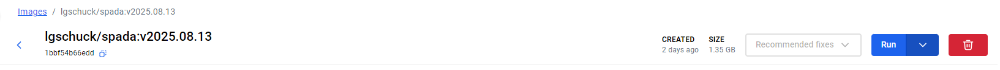
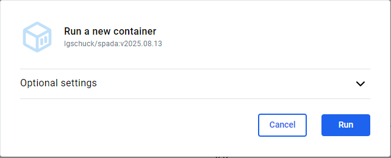
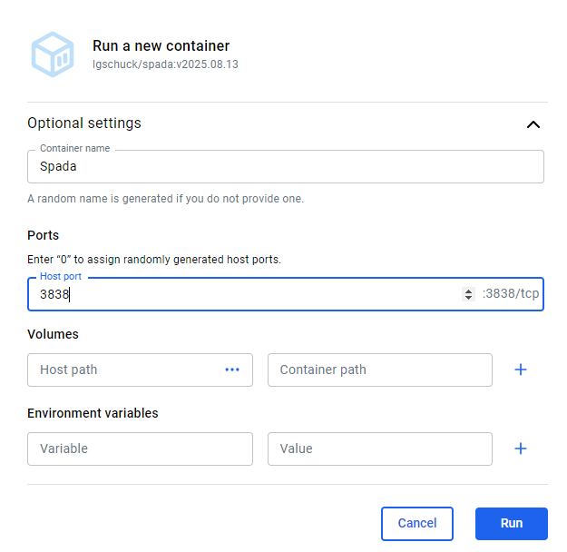
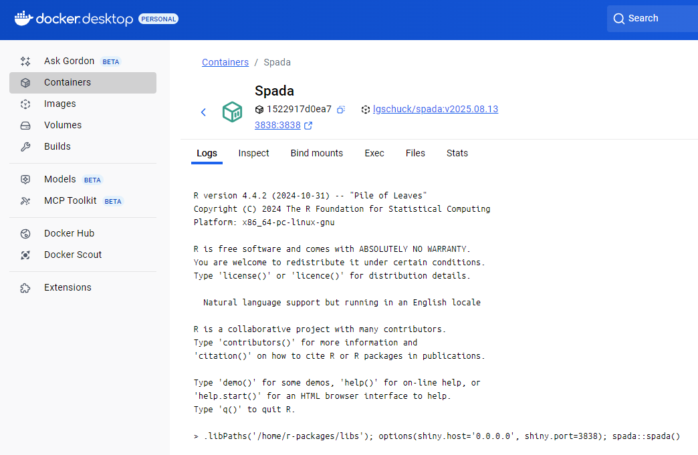
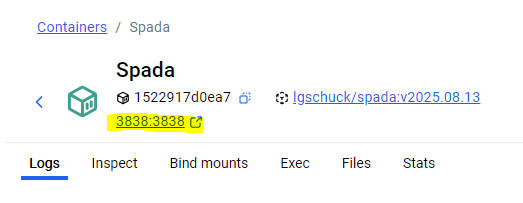
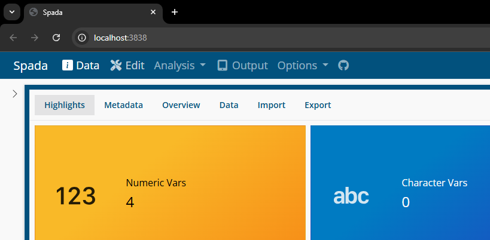

Docker
The best way to run Spada is through Docker. As Spada uses specific versions of packages and R itself, the Container ensures that you will have everything you need to run Spada properly.
Run
Click in Run

Open Optional settings.

Insert a Name for the Container and set the Host Port to 3838.

Now the Container will be running.

To open it, click in 3838:3838 below the Container name or go in a browser and use the localhost:3838 address.

Your web browser will open in localhost:3838.
